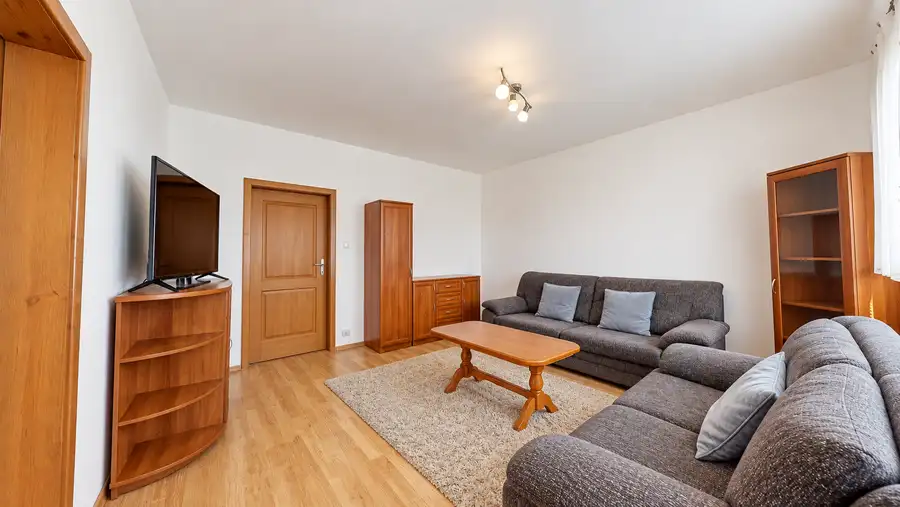
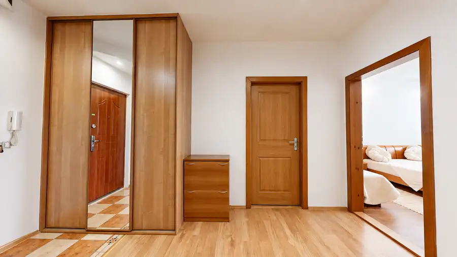
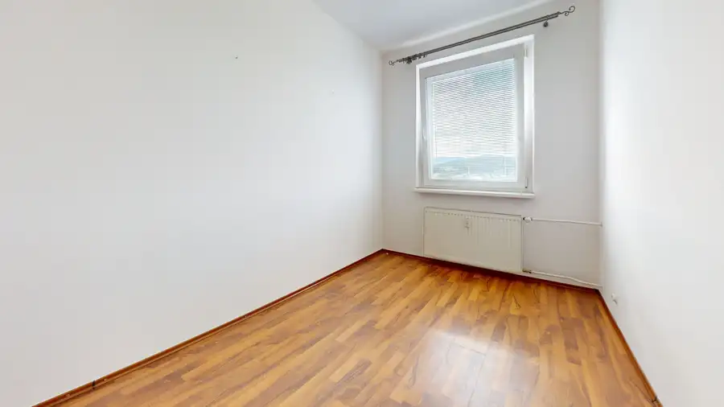
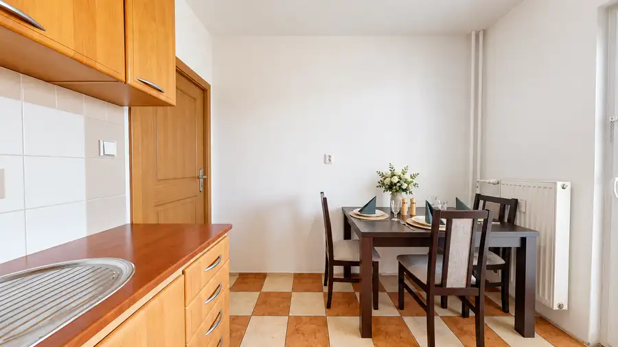
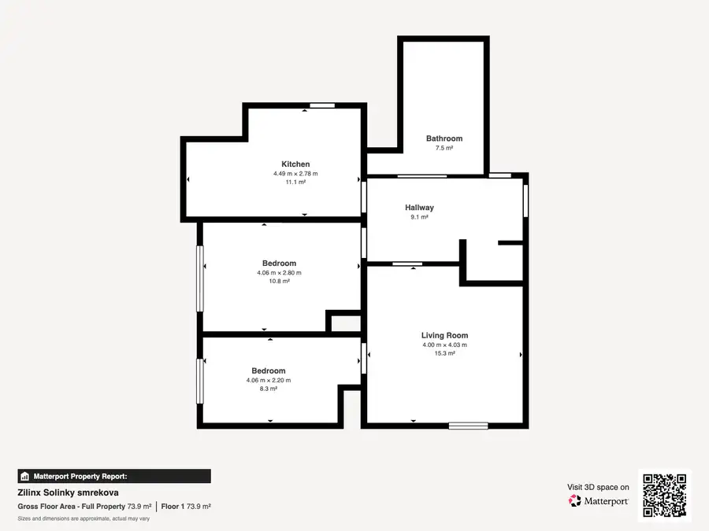
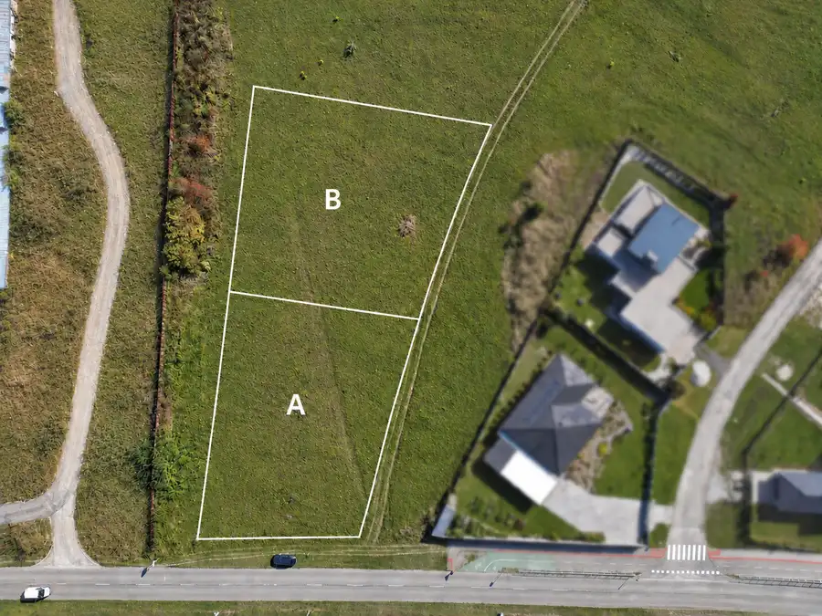
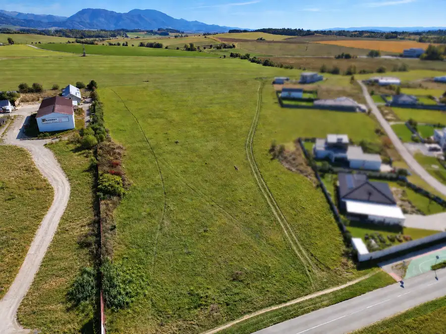
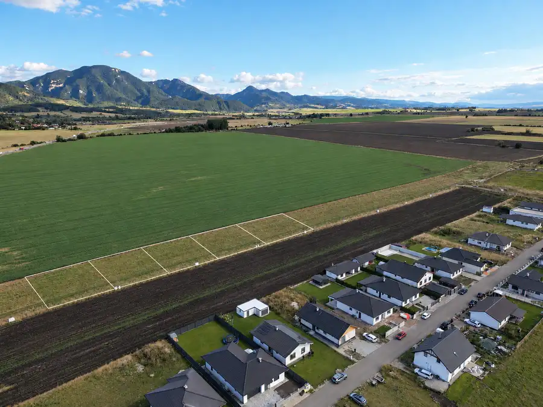

3-izbový byt na nasťahovanie, 68 m2 + balkón Žilina, Solinky
Žilina





- Dispozícia3-izbový
- Plocha72 m²
- Poschodie8. z 11
- StavČiastočná rekonštrukcia
- VlastníctvoOsobné
O nehnuteľnosti
Ponúkame na predaj 3‑izbový byt s úžitkovou plochou 68 m² a slnečným balkónom o výmere 4m² na 8. poschodí bytového domu na sídlisku Solinky. Byt je po čiastočnej rekonštrukcii a predáva sa kompletne zariadený. Nový majiteľ nemusí riešiť nábytok ani vybavenie a môže sa nasťahovať prakticky okamžite, prípadne byt ihneď ponúknuť na prenájom. Akcia do 11.10.2026 - pri rýchlom jednaní cena 190 000 €Dispozíciu tvorí spálňa, samostatná kuchyňa so špajzou a obývacia izba s prepojenou menšou izbou, ktorá sa dá využiť ako pracovňa, hosťovská alebo detská izba. Toto prepojenie je pre pár alebo malú rodinu praktické, treba však počítať s tým, že menšia izba je prístupná cez obývaciu časť s elektrickým krbom. Úložné priestory sú nadpriemerné: špajza pri kuchyni, vyhradená šatníková časť v priestrannej chodbe a pivnica v dome, čo býva pri trojizbových bytoch najčastejšia slabina.Ôsme poschodie z jedenástich prináša svetlo a nerušený výhľad smerom na západ. Dom má dva výťahy, takže vysoké poschodie nie je obmedzením ani počas servisu jedného z nich.Parametre:• 3‑izbový, úžitková plocha 68 m² + 4m² balkón• 8. poschodie z 11, dva výťahy v dome• Samostatná kuchyňa so špajzou• Murované jadro s vaňou• Priestranná pivnica• Bezproblémové parkovanieVykurovanie a náklady:Bytový dom má vlastnú domovú kotolňu, takže vlastníci si regulujú vykurovanie sami a nie sú viazaní na cenník dodávateľa diaľkového tepla. Mesačné zálohy pri jednej osobe v byte predstavujú 178 € za vykurovanie a vodu, približne 20 € za elektrinu a 10 € za plyn, teda spolu okolo 208 €. Obývacia izba je doplnená o elektrický krb, vhodný na prikúrenie v prechodnom období. Pri väčšom počte osôb sa mení len spotrebná zložka a ročné vyúčtovanie Vám rád ukážem na obhliadke.Lokalita:Solinky patria k najvyhľadávanejším obytným častiam Žiliny a vybavenosť je kompletná priamo v lokalite: obchody, materské aj základné školy, zdravotné stredisko a pravidelné spojenie MHD do centra. Blízko je aj Žilinská univerzita, čo je podstatné, ak byt zvažujete ako investíciu; zariadené trojizbové byty v tejto časti mesta sa prenajímajú rýchlo, či už rodine alebo po izbách. Rád Vám k tomu pripravím prepočet očakávaného nájmu.Rada Vám byt ukážem osobne a pripravím prehľad financovania. V prípade záujmu ma neváhajte kontaktovať:MSc. Jagoda Bezak0949 623 162jagoda.bezak@targetreal.sk.SK / PL / ENG
Parametre
- Cellar area
- 3 m²
- Cena vrátane energií
- Nie
- Druh
- 3 izbový byt
- Dátum zverejnenia
- 30. 09. 2026
- Energetický certifikát budovy
- nie je
- Energie
- 208
- Orientácia
- Severozápadná
- Plocha balkónu v m2
- 4 m²
- Podlažie
- 8
- Počet balkónov
- 1
- Počet izieb / miestností
- 3
- Počet nadzemných podlaží
- 11
- Počet pivníc
- 1
- Prechodová izba
- Áno
- Stav nehnuteľnosti
- Čiastočná rekonštrukcia
- Telekomunikácie
- Telefón, Internet, Optická sieť
- Typ
- Predaj
- Typ konštrukcie
- Panelová
- Umiestnenie
- Ďalšie nadzemné podlažie
- Vlastníctvo
- Osobné
- Vybavenie
- Balkón, Pivnica, Verejné parkovanie, Výťah
- Vykurovanie
- Ústredné, Krb
- Zariadenie
- Zariadené kompletne
- Úžitková plocha
- 72 m²
Kde to je


Mohlo by Vás zaujímať

PozemokNové 142 000 €Stavebný pozemok 788 m² Tomčany | IS pri pozemku | Martin Martin 788 m²
PozemokNové 165 900 €Stavebný pozemok 838 m² Tomčany | IS pri pozemku, Martin Martin 838 m²
PozemokNové 84 000 €Stavebný pozemok 700 m² | IS, rovinatý terén, okamžitá výstavba | Rakovo, Martin Rakovo 700 m²